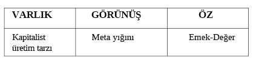

C. DİYALEKTİK MATERYALİZMİN BAŞLICA KATEGORİLERİ
Değişik bilim dallarının kendi özgül alanlarında ürettikleri kategoriler, maddi gerçekliğin bir bölümüne, tikel bir alana ait ilişkileri kapsarlar. Yalnızca kendi sistemleri içinde açık bir anlamları vardır. Böylece, örneğin biyoloji içinde üretilmiş kavram ve kategoriler toplumsal hareketi açıklayamazlar. Her kategori, ancak kendi sistemi içinde bir evrenseldir.
Mantık kategorileri ise, bilimsel kategorilerin bu özgüllüklerini, yani sınırlanmış genelliklerini aşmayı, “evrensellerin evrenseli” olmayı amaçlar.
Bu anlamda diyalektik materyalizmin kategorileri, bilimsel kategorilerden farklı olarak, yalnızca belli bir tikel alanın özellik ve ilişkilerini değil, insan pratiğinin konusu olmuş bütün bir evrenin temel ve genel özelliklerini, bağıntılarını yansıtır.
Bu bölümde, diyalektik materyalizmin birkaç kategorisini inceleyeceğiz. İşlenen kategorilerin seçiminde, gerçekliği araştırma, inceleme, yorumlama ve zihinsel olarak yeniden üretme süreçlerinde belli başlı aşamaları temsil edebilme özelliğini en fazla taşıma kıstasını kullandık. Aynı zamanda ele alınan kategorilerin, en zengin içeriğe sahip olmalarına dikkat ettik.
Böylece kendilerinden söz edilirken bağıntılı oldukları, fakat burada özel olarak ele alınmamış diğer kategoriler üzerine de konuşma imkânını bize verebileceklerini düşündük.
1. ÖZ VE GÖRÜNÜŞ
Diyalektik materyalizmin kategorilerini incelemeye, öz ve görünüş kategorisi ile başlıyoruz.
Bu seçimin birbirine bağlı başlıca iki sebebi var:
— Öz ve görünüş kategorisi, yöntemin genel yolu olan “soyuttan somuta” gidişin içeriğini açıklar. Bu bakımdan, bir araştırma sürecinin başlangıç kavramlarının kaynağına işaret eder.
— Öz ve görünüş kategorisinin ifade ettiği bağıntı, ve her iki kavramın karşılıklı ilişkisi, varlığın diğer belirlenimlerinin (ve burada incelemek üzere seçtiğimiz kategorilerin) hareketini kapsar. Diğer pek çok kategorinin içeriğini aydınlatmak için elverişlidir. Bilginin gelişme yönünü ve aşamalarını dile getirir. Varoluşun örgütlenmiş yapısının diğer dereceleri, öz ile görünüş arasındadır.
Öz ve görünüş, diğer birçok kategori gibi, diyalektikten önce idealist ve metafizik sistemler içinde anlamlandırılmış ve kullanılmıştır.
Varlıkların, biri duyularımızla algıladığımız, kendisini hemen ele veren, diğeri ise bunun ardında, derininde bulunan iki yanı olduğu düşünülüyordu. Görünürdeki yan, daima geçici ve değişken bir aldatıcılık olarak, diğer yan ise, temel, kalıcı ve hakiki bilginin kaynağı olarak değerlendiriliyordu.
Gerçekten varlıkta böyle iki ayrı yan, iki ayrı yapı var mıydı?
Bazı metafizikçiler, maddenin ayrıştırılmasıyla, kesilip biçilmesiyle “öz”ün bulunabileceğini, “kabuğun kırılıp çekirdeğin ele geçirilmesi gibi” bunun da mümkün olacağını düşünüyorlardı.
İdealistler ise, “özün maddeden ayrı ve onun dışında bir gerçekliği bulunduğunu ve bir ruh gibi ancak düşünce ile kavranabileceğini” ileri sürüyorlardı.
Bununla birlikte, ikisi arasında şu ortak noktaları saptayabiliriz:
— Maddenin görünüş ve öz olarak farklılaşmış iki ayrı gerçekliği vardır. Biri olmaksızın diğeri, ya da birbirinden ayrılmış olarak her ikisi de ayrı ayrı varolabilirler,
— Öz ve görünüş birbirini içermez halde, bir karşıtlık ve başkalık olarak bulunurlar. Çelişkileri içinde birlikleri, ya da birliklerinde çelişkileri bulunmaz.
İdealizm ve metafizik, maddenin geçici ve değişken niteliğinden ayrı, kalımlı bir temel öğenin ona öncel olarak varolduğu düşüncesini genel olarak ortaklaşa taşımakla birlikte, bu önermeden farklı sonuçlar çıkarırlar. İdealizm, bu kalımlı ve öncel öğenin, ruh, idea, tanrı vb. olduğunu, metafizik ise, arkhe (ilk madde), atom, töz vs. olduğunu söylüyordu. Böylece ayrıldıkları yerde gene birleşiyorlar ve öz her ikisinde de çelişmesiz, bağıntısız, değişmez bir gerçeklik olarak tasarlanıyordu.
Diyalektiğin ilk büyük ustası Hegel, “öz ve görünüş” arasındaki ilişkiyi ve her birinin içeriğini, kavramların diyalektik hareket ilkelerinden türetiyordu. Onun bazı tanımlarını inceleyelim: “Öz, aşılmış varlıktır. O, varlık alanının yadsınması olduğu ölçüde, kendi ile yalın özdeşliktir.”
Hegel’de aşma kavramı, bir yadsıma sürecini ifade eder. Aşılmış olan, aşanda “olumlu” yanı ile ve daha yüksek bir düzeyde kendini sürdürür. Aşma terimi, diğer yandan “elenerek gelişme”yi anlatır. Kavramın aşılması, kendi hareketi boyunca, kendinden öte bir başkaya geçiştir. “Öz, varlığın aşılmasıdır” denildiğinde, Hegel açısından, önce varlıkla öz arasında bir çelişme bulunduğunu ve aşanla aşılan arasında bir olumsuzlanma bağıntısı olmak gerektiğini anlamalıyız. Gene bir başka yerde öz’ü, “dolaysızlığından ve başkalarıyla ilgisiz ilişkisinden çıkıp kendi ile yalın birliğe dönmüş olan varlık” olarak tanımlar. Burada da, varlık ile özün hareketli bir bütünlük oluşturduklarını, her birinin kendi özdeşliğini, karşısındaki ile karşıtlığında bulacak bir hareket içinde olduklarını anlatıyor. Bu diyalektik akış, geçiş karşıtına batış ve yeniden kendine dönüş süreçleri içinde, daima elenen, inkâr edilen ve olumsuzlanıp yok edilen özellikler bulunacaktır. Bütün bu hareket ve değişikliğe dayanan, elenmelerden ve geçişlerden sonra da kendisine, kendi özdeşliği olarak dönebilen kavram, ÖZ’dür.
Öz’ü tanımladığı bir başka yazısında şunları söylüyor: “Belirlenmiş bir andır, ama o belirlenim içinden geçmiş olan ve belirlenimi ortadan kaldırılmış bir öğe olarak kapsayan bir belirlenmemiş andır.” Bu çetin cümleyi şöyle açabiliriz:
— Öz, kendisi dışında bir şeyle belirlenmemiştir.
— Ama, varoluşunun bir anında, bir ya da daha fazla belirlenim içinden geçmiştir. Bu an, onun görünüş kazandığı andır. Gene onun ifadesiyle, “öz, görünüşe geçmek zorundadır.”
— Bununla birlikte öz olarak öz, yani görünüşün aşılması olarak, kendine dönmüş olan olarak, bir an taşıdığı belirlenimleri, kendisinde ancak “ortadan kaldırılmış bir öğe olarak” kapsayan bir kavramdır.
Öz kavramının Hegelci diyalektik içeriğini daha yakından tanıyabilmek için, “görünüş”ün onda nasıl tanımlandığına da bakmak gerekir. Şu cümleyi anahtar olarak alıyoruz: “Görünüş, varlık açısından özün kendisidir. Özün bir görünüşe sahip olmasını sağlayan şey, onun kendi kendinde belirlenmiş ve böylelikle mutlak birliğinden ayrımlanmış olmasıdır.” ... “Görünüş, özün kendisidir, ama sadece onun anı olacak şekilde belli bir belirlenim içindeki özüdür...”
Demek ki görünüş, özün kendi mutlak birliğinden ayrılmış halidir. Onun hareketinin belirlenimlerle ayrımlanabilen bir halidir. Ne var ki kazanılan bu belirlenim, onun kendisinin aşılmasına yol açan dolaylanma, özün kendisine aittir: “Görünüşün anları, özün kendisinin anlarıdır: Özün içinde varlığın bir görünüşü ya da varlığın içinde özün bir görünüşü yoktur. Özün içindeki görünüş, bir başka’nın görünüşü değil, kendinde görünüştür, özün kendi görünüşüdür.”
Burada varlık kavramı, öz ile görünüşün birliğini ifade ediyor. Varlıkta öz ve görünüş ayrılmaz bir bütünlük gösteriyor. Öyle ki, biri olmaksızın diğeri olamaz, öz olmaksızın görünüş ve bir görünüş kazanmaksızın kalabilen bir öz yoktur. Aralarındaki ayrım şudur: Öz, olumlu ile olumsuzun birliği olarak bir temeldir, görünüş ise özün dolaylanması ve olumsuzlanmasıdır.
Öz ile görünüş arasındaki bu ilişki, aynı zamanda bir karşılıklı etkileşme ilişkisi olmak zorundadır. Onun mantığına bağlı kalarak şu sonuçları çıkarabiliriz:
— Öz, görünüşten ayrı değilse, evrensel karşılıklı etki ilişkisinden dolayı, öz de görünüşten etkilenir. Yani özün temel olması, onun değişmez ve etkilenmez bir katılık olduğu anlamına gelmez.
— Ancak öz, temel belirleyici, değişenlerin değiştiricisi ve değişmelerden en son etkilenen olduğuna göre, onun değişmesi, bütün varlığın değişme durağına denk düşer.
Böylece, görünüşün aşılmasında, özün belirleyici rolü ile, özün aşılmasında ortaya çıkan, varlığın başka varlığa geçişi ya da ortadan kalkışı düşüncesi vurgulanmış olmaktadır.
Diğer yandan değişme (ya da genel olarak hareket) özün etkisiyle ve özün etkilenmesiyle doğmaktadır. Demek ki, öz yadsınmaya uğramadıkça, görünüşün değişmelerinde de bir kesiklik olmayacaktır. Her ne kadar öz ile görünüş arasındaki bu çelişme, bir noktada özün kendisine uygun bir görünüşü egemen kılmasıyla çözülse de, o an, öz de artık değişikliğe uğramış olur. Böylece öz ve görünüşün özdeşliği anı, bir mantıksal tamamlanma anı olduğu kadar, varlığın hareketinde de bir sıçrama anını ifade eder. İşte bu anın gerçekliği, görünüşten öze gidebilmenin, görünüşte özü yakalayıp çıkarabilmenin imkânlarını vermektedir. Daha önce kullandığımız deyimle, soyut görünüşün, somut özü verebilmesi, ancak görünüşün aşılabilmesi ve sürecin kesintiye uğrayıp ayrışmasıyla gerçekleşir. Burada öz görünüşe, görünüş öze geçmiştir.
Mekanik ve metafizik sistemlerde, özün görünüş, görünüşün öz olması, art arda gelen farklı yapıların sıralanışı olarak düşünülmüştür. Önce öz vardır, sonra buna uygun bir görünüş oluşur ve o kendisinden sonra gelişecek olan bir başka görünüşün özü olur vs. Palamut meşenin özüdür, meşe kerestenin özüdür, kereste masanın özüdür ve bu böylece sürüp gider. Burada öz ve görünüş arasındaki ilişki, sıralı ve zincirleme bir oluş’u geriye doğru izleyerek açığa çıkarılabilir. Diyalektik açısından, bu tasarım, hareketin bir alt biçimini, mekanik yer değiştirmeyi ifade edebilmekte, fakat öz ve görünüş arasındaki ilişkinin gerçekliğini vermemektedir. Öz ve görünüşün birbirine geçişi, diyalektik açısından, böyle bir sıralı yer değiştirme değildir. Bununla birlikte diyalektik, elbette hareketin genel ilerleyişi bakımından, bir görünüşün bir başka görünüş için öz olması ve bunun böylece sürüp gitmesini de görmektedir. Fakat bu ilişkinin biçimlerinden yalnızca bir tanesidir ve ilişkinin aslı bundan ibaret değildir.
Özün görünüşe ve görünüşün öze geçmesi ve bunların bir bütün oluşturmalarının iki derecesini ayırt edebiliriz: Birincisi, görünüşün kendi hareketi içinde özü göstermesi, onun belirlenimlerinin bir ifadesi olması ve özün de, görünüşün kaynağı ve genel-soyut sentezi olmasıdır. Öyleyse, ilk olarak öz ve görünüş, aynı varlık yapısının gerçekleridir.
İkincisi, öz ve görünüşün aynı belirlenimlere sahip oldukları özdeşlik ve aşılma derecesidir ki, burada da ikisi bir ve aynı gerçeklik olarak birbirlerine geçmişlerdir.
Birincisinde, görünüşe ait her belirlenim ve her özellik özden çıkmıştır, öz orada “görünmüştür”. Görünüş, öze ait bir şey olmuştur ve öz, böylece görünüşe geçmiştir.
İkincisinde, görünüş tamamlanmış, aşılma noktasına gelmiş varlığın bir yanı olarak, öz ile özdeş olmuş, onun hareketinin ve belirlenimlerinin kendisinde bir çakışmasını temsil etme düzeyine yükselmiştir. Öz, bütün gerçekliğini, bu tamamlanmış varlıkta görünüş olarak açmıştır.
Hegel, sınır içeriğinin, ancak sınır ötesinin bilinciyle kavranabileceğini söyler. Bu önerme, burada şunun anlaşılmasına yardım eder: Olgunun, nesnenin, sürecin vs. inkâra uğramış, aşılmış, ortadan kalkmış olduğu, bir başkaya geçiş anında, öz ile görünüşün ilişkisi yitip giden bir özdeşlik olarak kavranabilir.
Dikkat edilirse, öz ve görünüş kategorisinin bu içeriği, bizi bir yandan da düşüncenin soyuttan somuta gelişmesinin diyalektik yolu hakkında daha önce söylediklerimize götürmektedir. Kısaca hatırlayacak olursak; “soyut” kavramı, düşüncede henüz belirlenimleri açığa çıkmamış, bağıntıları ve kavramsal iç yapısının hareketi tanınmamış olan bir bulanıklık durumunu ifade ediyordu. “Somut” ise, analitik ve sentetik bir bütünsel süreç boyunca, bütün özellikleri netleşmiş, bağıntıları seçik hale gelmiş ve zenginleşmiş “son” kavramı tanımlıyordu. Hegel açısından sorun şöyle özetlenir: Varlığa verilen her belirlenim, bu belirlenimler varlığın iç hareketinin kaynaklarına, yani temel çelişmelerine götürdüğü ölçüde özü açığa çıkarır. Böylece varlığın hiçliği onun derinleşmesinde aşılır. Bunun yanı sıra, varlığın belirlenimleri zaten ona dıştan dayatılmış olmayıp onun özünden gelen bir içtepinin ürünüdür. Öyleyse öz, varlığın dışında kalan bir şey değildir. Bu durumda varlık özüne giderken, bir anlamda dolayımlarla zenginleşerek dışına açılmaktadır. İçini açarken dışlaşır; ya da dışlaşma, aslında bir içe dönüştür. Böylece görünüşe doğru gelişen hareket, aslında özün açığa çıkışı ve gerçekleşmesi olduğu kadar, görünüşün de öz ile bütünleşmesi ve özdeşleşmesi anlamında tamamlanmasıdır.
Hegel sisteminin temel ilkesini, burada bir kez daha görüyoruz: Soyut kavramdan somut kavrama, ya da görünüşten öze olan harekette, başlangıç ve son özdeştir. Soyut kavramın açılış süreci, onun özünün bir görünüş halini alış sürecidir. Sonuçtaki somut kavram ise, bu görünüşün öze uygun aşılmasını, öz ile görünüşün bir ve aynı olmasını bu anlamda da özün öz olarak kendisine dönmüş olmasını anlatır.
Demek oluyor ki, öz, kendisinin görünüşle birliğini temsil eden varlığın içinde keşfedilecektir.
Diyalektik materyalizm, maddi olgunun kendi içinde örgütlenmiş bir bütünlüğü ve özneden bağımsız bir gerçekliği bulunduğu düşüncesinden hareketle, dış dünyanın duyumlarımıza konu olan bir somutluğu bulunduğunu söyler. Ne var ki bu somutluk, insanın pratik etkinliğinin, dolayısıyla da bilgi süreçlerinin dışında kalan haliyle tam bir soyutluluktur. O, bağıntılarının, süreçlerinin bir bütünlüğü olarak kavrandığı ve zihinsel olarak yeniden üretildiği oranda bir somutluk olacaktır.
Bu kavramlar açısından bakıldığında, dış dünyanın “görünüşü”, düşüncede soyut formun içeriğidir. Öz ise, gene bu çerçevede, düşüncedeki somutluğa karşılık düşecektir.
Bir özdeyişinde Marx, “görünüş ile öz aynı olsaydı, bütün bilim gereksiz hale gelirdi” diyor. Görülebileceği gibi, bilimsel faaliyetin bütün içeriğini, en genel düzeyde tanımlayan “somut kavrama ulaşma” hedefi ile, bilimin “özü keşfetme” işlevi arasında bu bakımdan kurulmuş bir birlik vardır.
Marx’ın, “somut”u, bağıntıların ve belirlenimlerin bütünlüğü, çok sayıda belirlemenin bir noktada bağdaşması olarak tanımladığını hatırlayalım. Bu anlamda, öze doğru giden düşünce, mümkün bütün kavram ve kategorilerin bir bağdaşmasını sağlayabildiği ölçüde, özü açığa çıkarmış olacaktır. Öyleyse öz, bir yandan görünüşteki çokluğu, karmaşıklığı ve düzensizliği ifade eden birçok kategorinin, daha yüksek ve daha genel düzeylere yükseltilmesi ile ve onlar arasında bir “bağdaşma”, bir sentez durumunun elde edilmesiyle bulunacak, diğer yandan da bu süreçte karşılaşılan her kategoriyi, daha derindeki bir ilişkiye götürecek tarzda soyutlanmasının sonunda bulunacaktır.
Kapital’de şöyle diyor Marx: “Biz metaların ardında gizlenen değere ulaşmak için, metaların değişim değerinden, değişim ilişkilerinden hareket etmiştik.”
Daha ileride ise, değerin ardında gizlenen soyut insan emeğini bulmak için aynı yolu izleyecektir.
Burada, dereceli ve sıçramalarla ilerleyen bir soyutlama sürecinin, çok sayıda belirlenimin sentezlenmesi süreciyle iç içe ilerlediğini görebiliyoruz.
Başlangıçta, “bir meta yığını olarak görünen” kapitalist üretim tarzını ele almıştı Marx. Meta kavramının, bu yığının en soyut ifadesi olduğu sonucuna ulaşmış ve metanın değişim ilişkileri kavramıyla hareket içinde kazandığı anlamı bulmuştu. Burada ise, değişim değerinin de ardında (ondan daha genel ve soyut) değer kavramının bulunduğunu keşfediyor. Değer’in analizinden de, yani onun soyut bir kavram olarak başlangıç noktasında bulunduğu bir süreçten ise, “emek” kavramını türetiyor.
Diğer yandan, “emek” kavramı, kendisinden önce gelen ve derece derece her biri daha dar kapsamlı birçok kategorinin (meta, değişim, değer vs.) birbirlerine içten bağlantılanmasının ve bir noktada bağdaşmalarının sonucu olma özelliğini taşıyor.
“Görünüş”, böylece olgunun hemen algılanabilen, kendisini ilk ve açıkça ortaya koyan hali olarak “somut”tur; elle tutulur, gözle görülür olandır. Fakat düşünce için henüz kendi iç hareketini ifade eden kavramların açılmamış, bağıntılarının deşilmemiş hali olduğu için henüz hangi belirlenimlere, ilişkilere ve bağıntılara sahip olduğu anlaşılmamış olduğu için en soyuttur.
“Öz” konumunda bulunan “emek” ise, (ki özellikle soyut insan emeği söz konusudur burada), metanın görünürdeki herhangi bir özelliği değildir. Metada cisimlenmiş emeğin, kendine özgü rengi, kokusu, ağırlığı vb. yoktur. Bu anlamda o, görünüş karşısında en soyut olandır. Fakat öz, bir kez zihnin işlemleri sonucu kendisine ulaşıldığında, en somut kavram (kalıcı ilişkiler olarak konulan şey) olarak karşımıza çıkacaktır.
Burada Hegel’in tanımıyla Marx’ın uygulaması arasında birlik görülüyor:
Hegel: “Görünüş, varlık açısından özün kendisidir.”
Marx: “Meta ve mübadele, kapitalist üretim tarzı açısından, bir emek-değer ilişkisidir.”
Yöntemin “görünüşten öze”, “soyuttan somuta” ilerleyişi, tarihselle mantıksalın birliği açısından da anlamlıdır. Daha önce de andığımız bir sözünde Marx şöyle diyordu: “İnsanın toplumsal yaşam süreçleri üzerindeki düşünme ve incelemeleri, dolayısıyla bu biçimlerin bilimsel tahlilleri, bunların fiili tarihsel gelişmelerine tamamen ters düşen bir yol izler. İşe post fectum (her şey olup bittikten sonra) önünde hazır bulunan gelişme süreçlerin sonuçlarıyla başlar.”12
Örneğin, belli bir fiyatla piyasada dolaşan meta, satın alınabilen, kullanılan somut bir eşya, kazanmış olduğu “para” biçiminin altında, “özel emeğin toplumsal niteliğini” ve “tek tek üreticiler arasındaki toplumsal ilişkiyi” gizler. “Para” olarak biçim kazanmış olan bu ilişki, ancak süreçlerin çözümlenmesiyle, bir dizi soyutlamayla açığa çıkarılabilir. Burada önümüzde bulunan “para” biçimi, toplumsal emek süreçlerinin bir sonucudur ve inceleme onun analizinden başlamaktadır. Bu biçimin ardında yatan emek ilişkileri ise, ancak süreçlerin ayrıştırılmasından, soyutlanmasından geçerek bulunabilecektir. Görünen şey, görünüş halinde olan şey bugün paradır, dün bir ürünle değiştirilen başka bir üründü vs. Bu başka başka biçimler altında genel ve ortak olarak bulunan ise, bir miktar “emek”tir. Metanın gelip geçici dış özellikleri, onun “fiili varoluşunun” belirlenimleri, değişen bir çokluk gösterirlerken, “meta” olma özelliği için zorunlu bir temel nitelik değişmeden kalmaktadır. Bu değişmeden kalan bağıntı, varlığın özüdür. Öz, bu bakımdan, varlığın “içsel ve derindeki” yanı olarak da tanımlanabilir. Böylece öz ve görünüşün farklı yer ve zamanlarda birbirini izleyen ve birbirlerinin dışında ayrı varlıkları olan farklı gerçeklikler olduğunu ileri süren metafizik tanımlardan ayrılıyoruz.
Diyalektik ile metafizik hareket kavramlarının farkını şimdi şöyle özetleyebiliriz:
Özün bütün kavramları, görünüşün kavramlarının bütünlüğündedir. Ancak özün kavramları, görünüşün kavramlarının bir basit toplamı olmayıp bir düğümlenişi, birbirine geçişi ve birbiri içinde eriyişidir. Yoksa öz ve görünüş, sırayla birbirinin yerini alan, art arda dizilişin farklı evreleri değildir.
Görünüşün kavramlarının elenmiş, iç içe geçmiş ve böylece zenginleşip yoğunlaşmış halleriyle özün kavramlarını oluşturduğunu söylediğimizde, diğer yandan özün kavramlarının çözülüp dışlaşarak, farklı ilişkiler içinde dolaylanıp çoğalarak görünüşün kavramlarını oluşturduğunu söylemiş oluruz.
Hegel, özün olumluyla olumsuzun aşılmış birliği olduğunu, bir çelişmenin çözümünü ifade ettiğini söylüyordu. Buna karşılık görünüş, çelişkilerle zengin, canlı, değişken ve hareketlidir. Ne var ki görünüşün bu özellikleri, özün kavramlarının açılmış, dışlaşmış halinden başka bir şey değildir.
Hegel’in bu tanımlarının, diyalektik materyalizm açısından değeri büyüktür. Bize göre öz, şeylerin yasası olarak kendini gösteren bağıntı ve çelişmelerin bütünlüğüdür. Örneğin, emek-değer yasası, üretici güçlerle üretim ilişkileri arasında uyum yasası, birer öz’dürler. Bunların hepsi, bir dizi bağıntı ve çelişmenin yoğun, genel, temel ilkeleri halinde ayırt edilebilen, kendilerine dayanılarak birçok yeni ve değişik bağıntı ve çelişmeyi aydınlatmamıza imkân veren, metanın ve insan toplumunun değişik görünüşlerinden bağımsız olarak –fakat mutlaka kendine özgü bir görünüş içinde– bulunan öz’lerdir. Emek-değer yasasını, bütün meta biçim ve ilişkilerinde, uyum yasasını bütün toplum biçimlerinde buluruz. Fakat yasa biçimi altında bulduğumuz bu özler, metalar ya da insan toplumları olmaksızın yokturlar. Elbette, metanın ya da insan toplumlarının şurasına burasına gizlenmiş, elle tutulur bir varlıkları da yoktur bu yasaların. Bu anlamda, metayı neresinden bölersek bölelim, toplumun hangi öğesini duyularımızla yoklarsak yoklayalım, onlarda içerilmiş toplumsal emeği, ya da uyum yasasını bulamayacağızdır. Maddi üretim süreçlerinde, veya tarihsel harekette, öz daima bir dizi soyutlamanın sonucunda anlaşılabilen bir dizi bağıntıdır, bir dizi çelişmedir. Bağıntılar, daima bağlananlardan farklı bir şeydir. Bu açıdan, örneğin “çekirdek ve kabuk” benzetmesi ile, “yüzeydeki köpük ve derindeki akıntı” benzetmesi kıyaslanabilir. Birincisinde, ayrı ayrı varlıklar, ayrı ayrı gerçeklikler olarak, biri orada, diğeri burada bulunabilen farklılıklar olarak tanıtılmıştır: Öz (çekirdek) ve görünüş (kabuk). Lenin’in benzetmesinde ise, birbirinden ayrılmaları mümkün olmayan, tek bir akış sürecinin (nehrin) belirleyen özü (derindeki akıntı) ile belirlenen görünüşünün (yüzeydeki köpük) bütünlüğü dile getirilmektedir. Diyalektik anlamda, maddenin bütünlüğünden ayrılabilir, ayrılmış haliyle de hâlâ madde olarak kalabilir bir öz söz konusu değildir. Öz, incelenen nesnelerin, öğelerinin, çokluk, karmaşıklık içindeki zengin yapısının bütünlüğündedir. Bu karmaşa ve zenginliğin kendisi değildir, ya da onun bir parçası değildir.
— İçerik ve Biçim:
Öz ve görünüş, bütünün hareketi içinde değişik bağıntı düzeylerinin en somut ve soyut halidir ama, bütünlük, örgütlenmesinin değişik derecelerinde, bunlarla ilişkili farklı birçok yapı gösterecektir. Bunlar arasında, özellikle biçim ve içerik kategorileriyle anlatılan bağıntı türlerini, öz ve görünüşten ayırt etmek, fakat ilişkilerini de görmek gerekmektedir.
Biçim, görünüşün özelliklerinin dağınıklıktan, bağıntısızlıktan çıkarılarak, belli bir örgütlülük düzeni kazandırılmasıdır. Örneğin, mantıkta, terimler ve önermeler, yapının maddesini, bunların bağıntılı ve anlamlı düzenlenişini ve birbiriyle ilişkisini sağlayan kurallı örgütlülük (tasım) de biçimini ifade eder. Kimse, konuşurken, önermeleri sınıflandırıp bunlar içinde büyük ve küçük terimleri ayrı ayrı görerek, sonra da onları orta terimle ilişkilendirerek bir şeyler anlatmaz. Konuşmanın doğal akışı içinde, anlamlı olmanın gereği olarak, kendiliğinden bu ilişkiler kurulur. Düzenli bir konuşmada, görünüşteki ard arda sıralanmış sözler kalabalığının içinde “örgütlenmiş bir yapı” olarak mantıksal biçim ayırt edilebilir.
Görünüşteki ilişkisizlik, kopukluk, çokluk, görece bir birlik gösterdiği ve yapıyı tanımlanmaya elverişli hale getirdiği anda, bir “biçim” kazanmış olur.

Yukarıda özü, değişik biçim ve görünüşler altında, soyut olarak değişmeden kalan bir şey olarak tanımladık. Ne var ki, gerçekte, süreci açıklayıcı bir çelişki, bir yasa, temel bir bağıntı olmak anlamında her öz, kendine özgü bir biçimi gerektirir. Bütün tarih için, toplumsal olayların, görünüşlerin örgütlenmelerin özü olarak, sınıf mücadelesi kavramını ileri sürmek, en genel planda açıklayıcıdır. Ne var ki bir belli tarihsel aşamada, toplumsal kuruluşun özünü bu genellik içinde ifade etmek, açıklamayı eksik kılar. Bu mücadelenin hangi öğeler arasında, hangi çelişmeler üzerinde gerçekleştiğini ayırmak, yani bu genel özün, özel örgütlenmesini, tek kelimeyle biçimini bulmak gerekmektedir. Marx, kapitalizmin özünün, “üretimin toplumsal karakteri ile üretim araçları üzerindeki mülkiyetin özel biçimi arasındaki çelişme” olduğunu söylüyordu. Böylece, bütün zamanlar ve bütün sınıflı toplumlar için geçerli olabilecek en genel bir “öz”ün yanı sıra, özel olarak bir belli tarih döneminde bir belli toplumsal aşamayı açıklamaya elverişli, onun biçim özellikleriyle tutarlı bir öz önerilmektedir. Böylece öz, görünüş, biçim, birbiriyle uyumlu, sıkıca bağlı özellikler ve nitelikler içinde ifade edilmektedir.
Biçim’in, yığın içindeki belli öğelerin ve bağıntıların, özel bir tarzda örgütlenmesi olduğunu söylemiştik. Biçim’in üzerine kurulduğu bu öğelere, süreçlere, ya da bağıntılara, içerik adını veriyoruz.
Şu örneği inceleyelim:
“Saint Domingo’ya yerleşen ilk İspanyollar, hiç İspanyol emekçisi bulamadılar. Ama emekçi olmaksızın, sermaye uçup giderdi ya da en azından her birinin kendi elleriyle kullanabileceği küçük parçalara bölünürdü. İngilizlerin kurdukları son sömürgede –Swan River Sömürgesi– bu fiilen böyle oldu: Burada sermayeyi kullanabilmek için gerekli emekçi yokluğunda, büyük bir sermaye, tohum, araç ve hayvan sürüsü yok oldu. Ve hiç kimse, kendi elleriyle kullanabileceğinden fazla sermayeyi elde tutmadı.”
Marx, bu raporu şöyle yorumluyor:
“Wakefield’e göre, kölelik, sömürgeci zenginliğin biricik doğal temelidir. Ne var ki o (sermaye), kölelerle değil, özgür insanlarla iş görmek zorunda olduğu için, onun sistemli sömürgeciliği en kötü olasılıktır.”
Kapitalist sermaye, kendi üretiliş koşulları içinde tutarlı bir bütünlük gösterir. Kapitalist örgütlenme, mülkiyet ve emek ilişkileri, ücret sistemi, makineli üretim, toplumsal ilişkilerin yapısı, yani bütün bu içerik, kendine özgü bir örgütlenme sistemi içinde varolabilirdi. Bu örgütlenmiş bütünlüğün içeriği olarak hareket ve etkinlik kazanmış olan öğelerin, başka bağıntılar, başka süreçler, başka ilişkiler için geçerli olan bir başka biçim altında varlıklarını sürdürebilme imkânı yoktur. Taşınmış bir öğenin yaşamını sürdürebilmesi için, şu ya da bu ölçüde, kendi üretiliş koşullarına, kendi varoluş biçimine uygun ya da benzer yapılar bulabilmesi gereklidir. Farklı bir yapıya katılan her yeni öğe, o yapının özsel ilişkileri tarafından belirlenen bir çerçevede hareket etmek zorunda kaldığında, yapıyı kendine uyarlayamazsa, ya bu biçim tarafından değiştirilip dönüştürülecektir, ya da dışlanacak, işlevsiz bırakılacaktır. Kendini dayatma gücünü gösteren yeni öğeler ise, er geç biçimdeki bir değişimi gerçekleştirecektir.
Biçim, bir yandan, öz ve görünüş arasındaki ilişkide olduğu gibi, bilgi sürecinde kendisinden yola çıkılacak kategori olma özelliğini de taşır. Fakat diğer yandan, gene bilgi sürecinde, kendisine ulaşmayı hedeflediğimiz yapıyı da dile getirir. Mantık formları, doğa yasaları, teorik sistemler vs. yüksek biçimlerdir. Bu anlamda, içeriğin düzenli ve kararlı örgütlenmesi olarak, hem özün ele geçirişilinde bir başlangıç olma özelliği taşır, hem de içeriğin teorik-mantıksal yeniden kuruluşu olarak bilgi sürecinin sonunu temsil eder.
Konuyla ilgili bazı ilkeleri ve tanımları şöylece özetleyebiliriz:
Öz ve görünüş, içerik ve biçim, çelişmeli bir birlik gösterirler. Bu çelişme, bütünlüğü oluşturan kavramların bağıntılığında görülen farklı özelliklerden kaynaklanır.
Özsel olanı oluşturan kavramlararası bağıntılar, görünüşü oluşturan bağıntılılıktan daha kalıcı, derin, içseldir.
İçerik, en hareketli, ve değişken öğe ve kavramların yapısıdır. Biçim ise, görece donuk, katı, hareketten ve değişmeden gecikerek etkilenen “kabuk”tur. İçeriğe göre daha yalın, düzenli ve sakindir.
Öz ile görünüş, içerik ile biçim, arasındaki ilişki, birer çakışma ilişkisi değildir. Öz belli bir varoluş için daima temel olmakla beraber, çeşitli ve çok sayıda farklı görünüşün kendi üzerinde yükselmesine engel değildir.
Bunun gibi, benzer görünüşler de, aslında farklı özlere dayanıyor olabilirler. Bu durumda görünüşler arasındaki bu ilişki “benzerlik” kavramıyla anlatılır. “Benzerlik”, birbirleriyle özce ayrı şeylerin, belirtilerde ortaya koydukları uygunluk halidir. Farklı özlerin benzer görünüşler altındaki hareketi, bilimin ve günlük pratiğin yanılgılarına yol açar.
Öz ve görünüşün değişmeleri mutlak bir bağımlılık göstermez. Öz değiştiği halde, bir belli görünüş değişmeden kalabileceği gibi, değişen görünüşlere karşılık, öz değişmeden kalmış olabilir.
Bilginin amacı, görünüşten öze ve daha derinde başka özlere ulaşmaktır. Öz ile görünüş arasındaki çelişmeli birliği çözmek, özün neden ve hangi etkiler dolayısıyla o görünüşü verdiğini bulmaktır. Aynı şekilde özün, başka hangi görünüşler altında bulunabileceğini ve hangi başka görünüşlerin aynı öze dayandığını araştırmak, bilginin ilerleyişinin genel çizgisidir.
— İçsel ve Dışsal:
“İçsel ve dışsal”, öz ve görünüş kategorilerinin yöntemdeki işlevini tamamlayan kategorilerdir.
Genellikle, iç ve dış kavramlarının metafizik tarzda, bölümleme alışkanlığına bağlı olarak, bir yumurtanın içi-dışı, bir ülkenin siyasi sınırlarının içi-dışı gibi ayırımları ifade ettiği düşünülüyor. Pek çok başlangıç kitabında, sözlüklerde, örnekler bu türden ayrımlar üzerine veriliyor. Oysa diyalektik bakımından ayrım, öze ilişkin olanla, görünüşe ilişkin olan arasındaki ayrım olarak anlamlıdır. Bu anlamda, içsel olan, özü; dışsal olan ise, görünüşü ifade eder. Böylece iç ve dış bağıntıların, cisimsel anlamda kurulu iç-dış ayrımına denk düşmediği, ya da yalnızca belli bir anda, belli bir durum için denk düşebileceği görülecektir.
İç ve dış ayrımı, çeşitli bağıntıların süreçlerin ve öğelerin, bir belli bütünün hareketi bakımından oynadıkları role göre yapılmalıdır. Oluşu belirleyen, “olmazsa olmaz” türünden öneme sahip olan bütün öğeler, süreçler ve bağıntılar, içsel’dir; varlığın doğasını belirlemeyen, ama onun oluş sürecinde bir görünüş öğesi olarak bulunanlar ise dışsal’dır.
Konuyu, sözde anlaşılır kılmak için, iç ve dış ayrımını, cisimsel olarak apaçık bir içi ve dışı olan nesneler ya da olaylar üzerinde örneklemek, diyalektiğin vulgarizasyonuna, dolayısıyla da metafizikleştirilmesine yol açmaktadır.
Yumurta örneğini alalım: Denilir ki, yumurtadan civciv çıkabilmesi için, iç çelişmeler, yani yumurtanın döllenmiş olması belirleyicidir. Ama buna dış çelişmenin yani bir miktar ısının da katılması gereklidir.
Burada iç-dış ayrımının, yumurtanın kabuğuna göre yapıldığı açıktır. Kabuğun içinde olanlar iç çelişme, dışında olanlar ise dış çelişme sayılıyor. Döllenmiş olma, yalnızca kabuğun içinde olması dolayısıyla bir iç çelişme olarak görülüyor. Oysa herkes bilir ki, “belirleyici iç çelişme” olarak sunulmuş bulunan döllenme, soğuk bir yumurtada hiçbir şeyi belirleyemez. Civciv çıkması olayı, bir bütün olarak alındığında, döllenmiş olma ve ısı, parçalanamaz tek bir gereklilik oluştururlar. “Belirleyici içsellik”, bu ikisinin birliğindedir. Burada ısının dışsallığı ancak şu biçimde konulabilir: Kuluçka makinesinin ısısı ya da anaç tavuğun ısısı, ikisi de olayın gerçekleşmesi koşulunu yerine getirirler; ikisinden birisinin olması yeterlidir. Bu durumda hangisinin olacağı olayı dışsaldır. Özetle, ısı öğesi olayın içselliğinde, fakat hangi biçim altında olaya girdiği, dışsallığındadır.
2. OLANAK VE GERÇEKLİK
“Öz ve görünüş” kategorisi, varlığın az çok tamamlanmış yapısında ayırt edilebilen iki yanını, onun gerçekliğinin iki düzeyini araştırıyordu. Şimdi inceleyeceğimiz kategori ise, oluş sürecindeki varlığın başlangıç ve tamamlanma aşamaları arasındaki ilişkilerini inceliyor.
Kategorilerin, daima, bir önce ile sonra arasında yer aldıklarını ve kendileri bir kategorinin hareketi ile doğmuşken, kendi hareketlerinin de başka kategorilerin doğuşuna yol açtığını gördük. Kategorilerin bilgi sürecinde birer düğüm noktası olma özelliklerini burada şu biçimde görüyoruz: Her şey, önce kendi var oluşuna yol açan bütün geçmiş süreçler, bağıntılar ve hareketler bilinirse; sonra da, kendisinin varoluşunda rol oynayacağı gelecekteki bütün varoluşlar ve onların aşamaları bilinirse ve son olarak da, geçmişinin ve geleceğinin birliği olarak, bütün o bağıntılı ve geçişli süreçler kesintisizliğindeki kendi yeri bilinirse, gerçekten bilinir olacaktır.
“Olanak ve gerçeklik” kategorisi, işte bu “geçmiş-an-gelecek” bağıntısının, her kavram ve her şey için ifade ettiği en genel ve en temel özellikleri aydınlatmaya çalışıyor.
“Olanak ve gerçeklik” kategorisi, öğelerinden, süreçlerden, bağıntılardan oluşan bir hareket cümlesinden, belli bir gerçekliğin doğabilmesinin nasıl mümkün olduğunu, ya da tersine, bir belli gerçekliğin hangi bileşenlerden ve hareketlerden doğmuş olduğunu ve hangi başka gerçeklikler için kendisinin bir olanak olacağını çözümlemenin ilkelerini saptamaya çalışıyor.
Burada “olanak” kavramı, bir olaylar ve nesneler topluluğunun hareketindeki gelişme eğilimlerini, gerçekliğin oluşması için gerekli koşulların varlığını, ya da gerçekleşmeyi engelleyecek koşulların yokluğunu ifade ediyor.
“Gerçeklik” ise, varlığın somutluğudur. Hegel’e göre, “öz ile varoluşun birliğidir”. Bu tanım, “gerçeklik” ile “fiili varoluş” arasında bir ayırım koyuyor. “Fiili varoluş”, zorunlu ve zorunsuz kalıcı ve geçici, temel ve temel olmayan bütün yanların, niteliklerin, özelliklerin birliğidir. Gerçeklik ise, bundan farklı olarak, yalnızca özle birleşen özelliklerin, zorunlu, kalıcı ve temel yanların, süreçlerin birliğini tanımlayan bir kavramdır. Bu iki kavramın içerildiği “olanak ve gerçeklik” kategorisi ise, birinden diğerine geçişi de kapsamak üzere, esas olarak, olanaktan gerçekliğe geçişi, birbirlerini içerişlerini ve birbirlerine dönüşmelerini anlatıyor.
Olanak ve gerçeklik arasındaki ilişki, bir “oluş” sürecidir. Bir durumdan bir diğer duruma geçiştir. Hegel’e göre, olanağın zengin, karmaşık ve soyut çokluğuna karşılık, gerçeklik, yalın, düzenli ve somuttur. Bu açıdan bakılınca, onun ilişkiyi “mantıksal bir oluş süreci” olarak tanımladığını ve kavram hareketinin bir kategorisi olarak önerdiğini anlayabiliriz.
Diyalektik materyalizm ise, bu kategori ile ifade edilen ilişkiyi, insan etkinliğinin en önemli yanlarından biri olarak görür, pratik, daima bir şeyi başka bir şey yapmak, bir şeyin meydana gelmesini sağlamak, ya da istenmeyen bir şeyin doğmasını önlemek gibi amaçlarla özetlenebilen bir dizi işlemdir. Bütün çalışma, nelerden neler yapılabileceği, nelerle nelerin önlenebileceği gibi yalın bir soru çevresinde döner. Dış dünya ile kendi amaçları arasında bir çelişme gören insan, hedeflerini gerçekleştirebilmek için, elindeki nesnelerin, araçların, zaman ve mekân koşullarının elverişli olup olmadığına, hareket halindeki ya da kendisinin harekete geçireceği nesnel süreçlerin, amaç ve ihtiyaca uygun eğilimler taşıyıp taşımadığına; özetle, “hedeflediği gerçeklik için olanak bulunup bulunmadığına” bakacaktır.
Sınırsız bir çeşitlilik ve değişkenlik gösteren evrende, insanın yapmayı istediği her şey için olanaklar var gibi görünmektedir.
Hegel, çokluğun, çeşitliliğin ve değişkenliğin tümüyle bir olanaklar topluluğu olarak görülmesini, “gerçeklik karşısında derin olmayan düşüncenin bir abartması” diye tanımlıyor. “İnsan ne kadar bilgisizse, ele aldığı konunun belirlenmiş ilişkilerini o kadar az kavrar ve bu yüzden, örneğin politik laf ebeleri gibi, her çeşit boş olanaklılığa atılmaya eğilimli olur.”
Gene ona göre, içeriğinin bağlantılarından, ilişkilerinden koparılmış bir gerçeklik, ne kadar akla aykırı görünürse görünsün, “olanakların sınırsızlığı” kavramı açısından düşünüldüğünde, olanaklı gibi gösterilebilir: “Bu akşam ayın yeryüzüne düşmesi olanaklıdır; çünkü ay, dünyadan ayrı ve havaya atılan bir taş kadar düşebilecek bir cisimdir. Osmanlı sultanının papa olması olanaklıdır, çünkü sultan bir insandır ve insan olarak Hıristiyanlığı kabul edebilir, papaz olabilir vb. Pratik ve aklı başında adamlar, salt bir olanaklıdan ibaret olan olanaklının ayartmasına kendilerini kaptırmayıp gerçekle yetinirler... Öte yandan, her şey olanaklı sayılabilirse, aynı nedenle, olanaksız da sayılabilir. Çünkü bir içerik, sadece farklı belirlenimler değil, karşıt belirlenimler de taşır.”
Görülüyor ki, “her şeyin mümkün olduğu bir evrende” yaşıyor olduğumuzu söylemenin diyalektikçi bakımından bir anlamı yoktur. Çünkü gerçekten, bir belli gerçeklik için gerekli olanakların varlığı yokluğu problemi, bütün tarih boyunca, insan pratiğinin başlıca içeriğini oluşturmuştur, ve bu, “her şeyin olanaklı” görünmesiyle, ancak “bazı şeylerin gerçekleşebilir” olması arasındaki çelişmenin çözülmesi çabasıdır.
— Soyut Olanak ve Somut Olanak:
Olanak’ı, gerçekliğin ortaya çıkışı için gerekli koşulların varlığı veya aynı gerçekliğin doğmasını engelleyecek koşulların yokluğu olarak tanımlamıştık.
Bu durumlardan birincisine, yani gerçekliğin doğuşu için gerekli koşulların varlığı durumuna “Somut olanak”, ya da “Gerçek olanak” deniyor. Beklenen gerçeklik için zorunlu olanaklar, bu cümleye giriyor.
İkinci durum ise, oluşu sağlayacak koşullar hakkında bir şey bildirmemekle beraber, olmamaya yol açacak koşulların da bulunmadığını gösteriyor. Gerçekliğin o koşullardan doğması kesin değildir, ama doğmaması için de bir neden yoktur. Buna da “Soyut olanak” veya “Biçimsel olanak” deniyor.
İkisi arasındaki ayrımın, hem nesnel, hem de öznel dayanakları vardır. Bu durumda, “soyut olanak”, ya nesnel olarak bir belirsizlik aşamasıdır; nesnel eğilimlerin yönü ve gerçekleşme gücü yeterince olgunlaşmamıştır, ya da öznel olarak, bilgi açısından, olanağın yapısı henüz yeterince analiz edilmemiştir.
Pratik etkinliğin konusu, genellikle bir “soyut olanağı”, “somut olanak” haline getirmedir. Böylece gerçekleştirilmek istenen hedef için gerekli eğilimlerin, öğelerin geliştirilmesi ya da oluşturulması, engelleyici koşulların ortadan kaldırılması, gerçeklik için gereksiz olanların ayıklanması gibi bir dizi faaliyet söz konusu olacaktır. Nesne üzerindeki etkinliğin, burada bir soyut olanağı, somut olanak haline getirmede, kendisini bilinçli bir çaba olarak gösterdiğini tespit edebiliriz. Elde edilmek istenen sonucun bağıntılı bütünlüğü ile, bunun olanakları arasındaki ilişki Hegel’in belirttiği gibi, bir bilgi içeriğidir. Amaçlı ve bilinçli insan pratiği, soyut olanağı, somut olanak haline getirir. Öyleyse, insan pratiği, somut olanağı gerçeklik haline getirmekle kalmıyor, bundan öte, soyut olanakları da somut olanaklar haline getirebiliyor. Ne var ki, bu etkinlik, gene daima olanaklar topluluğunun kapsadığı malzeme ile sınırlıdır. Diğer yandan bu nesnel sınırlılık, aynı zamanda insan amaçlarının ve ihtiyaçlarının da sınırıdır. Ünlü özdeyişte söylendiği gibi, insan ancak çözüm olanakları bulunan problemleri önüne koyar ve her gerçek problem, çözüm olanaklarıyla birlikte doğar.
Amaç ve olanak arasındaki bu birlik, elbette yukarıda değindiğimiz gibi, çelişmeli bir birliktir. Olanaklar üzerindeki etkinlik, bir yandan hedefin olası çözümlerini yaratırken, diğer yandan da yeni hedefler, yeni problemler yaratarak bir ilerleme süreci doğurur.
— Olanaktan Gerçekliğe Geçiş:
Bir olanaklar topluluğu içinden, hedeflenen bir gerçekliği üretmek için girişilen faaliyet, her şeyden önce şu sorulara cevap arayacaktır:
— Hedeflenen gerçeklikle olanaklar arasında uyum var mıdır? Gerçekliğin, olanaklar topluluğu içinde varolan bileşenleri nelerdir?
— Hangi öğelerin bir araya getirilmesi, hangi süreçlerin ne tarzda etkilenmesi, hangi nedenlerin yaratılması ya da ortadan kaldırılması olanağı, gerçekliğe dönüştürecektir?
— İstenmeyen sonuçlar doğması hangi etkinliklerle önlenecektir?
Sorular çoğaltılabilir. Fakat soruların ilkesi, “geçmiş-an-gelecek” bütünlüğünü dikkate almalı, hareketin her biçiminde bir süreklilik bulunduğu ve değişip dönüşmenin bir aşma içeriği taşıdığı gerçeğine dayanmalıdır.
Çözümleme şu özellikleri dikkate alacaktır:
— Olanaklar topluluğundaki etkileşme ve nedensellik ilişkilerinin bulunması,
— Öz, görünüş, biçim, içerik ilişkilerinin, içsel olanla dışsal olanın ilişkilerinin aydınlatılması, etkilerinin ayırt edilmesi,
— Olasılıkların, karşıt gerçeklik eğilimlerinin ve alternatiflerin saptanması; bunların, hedeflenen gerçeklik için de bir olanak olup olmadıklarının değerlendirilmesi,
— Parça ve bütün, öğeler ve sistem arasındaki ilişkilerin bulunması,
— Nicelik ve nitelik ilişkilerinin çözümlenmesi,
— Evrim ve devrim süreçlerinin ilişkilerinin ve bunların birbirine dönüşme ve birbirini içerme tarzlarının tespit edilmesi vs.
Bir “oluş” sürecini ifade eden olanak ve gerçeklik ilişkisi, kategorilerin hareketinin temel niteliğini açıkça sergiliyor. Yalnızca “olanak” ve “gerçeklik” birbirine bağlı olmakla kalmıyor, diğer kategoriler de ilişkinin sürecinde hareket halinde bulunuyorlar. Böylece bizi, yalnızca bir belli olanaklar topluluğu ile ondan çıkacak olan gerçeklik arasındaki ilişkiye değil, aynı zamanda gerçekliğin olanak olarak işlev yüklendiği daha sonraki süreçlere (geleceğe) de götürüyor.
— Olumsallık ve Olanaksızlık:
Olumsallık ve olanaksızlık, gerçekleşme sürecinin, gerçekliğe karşıt iki durumudur. Olumsallıkta gerçeklik, tam bir belirsizlik içindeyken, olanaksızlıkta kendi inkârına takılıp kalmıştır.
Olumsallık, belli bir gerçekliğin bir olanaklar topluluğundan çıkabileceğini, çıkmayabileceğini veya beklenenden başka türlü çıkabileceğini tanımlayan bir kavramdır. Hegel kavramı şöyle tanımlıyor: “Olumsalı biz, var olabilen, ya da olmayabilen, şu ya da bu tarzda olabilen ve var olup olmamasının ilkesi kendisinde değil, bir başka şeyde bulunan şey olarak tanımlıyoruz.”
Burada soyut olanaktan farklı olarak, her türlü belirlenimin mümkün olduğu, fakat bunların hiçbirinin egemen olmadığı bir belirsizlik söz konusudur. Soyut olanakta, hiç değilse, gerçekleşmenin önünde bir engel bulunmadığını bilebiliyorduk.
Olumsallığı bir somut olanağa çevirmek, ya da onun bir olanaksızlık olduğunu, yani beklenen gerçekliğin ondan çıkamayacağını kesin olarak anlamak, veya burada istenenden başka bir gerçekliğin çıkacağını görmek, ancak teorik ve pratik etkinlikle mümkün olacaktır.
Konuyla ilişkili olarak Hegel şunları söylüyor:
“Doğanın sadece oluşumlarının zenginliği ve çokluğu karşısında coşkuya gelmek alışkanlığı vardır. Ancak bu zenginlik, eğer onda gerçekleşen idenin gelişmesi bir yana bırakılırsa, salt zenginlik olarak fazla bir ilginçlik taşımaz, üstelik, inorganik ve organik ürünlerin büyük çeşitliliğinde bize belirsiz bir olumsallıktan öte bir şey göstermez.”
Lenin, Hegel’in “ide”, “tin” vb. kavramları kullandığı yerlerde, bunları, “insanın bir ereğe yönelmiş pratik etkinliği”, “amaçlı insan eylemi” biçiminde “ayakları üzerine” diker. Böyle bir çevirme burada da uygun düşüyor. Eğer, “doğanın oluşumlarının çokluğu ve zenginliği”, onun üzerinde gerçekleşen amaçlı insan etkinliği bir yana bırakılacak olursa, anlamsız olacaktır. Böylece olumsallık, onu bir biçimde belirlenimlerle donatacak, ne için ve ne biçimde, ne olabilir ya da olamaz olduğunu açığa çıkaracak olan sosyo-tarihsel süreçler tarafından aşılır.
— Karşıt ve Alternatif Olanaklar:
Hegel, olanaklar zenginliğinin ve “her şeyin olabilir olmasının” beklenen gerçekliğin oluşmasına yetmediğini söylerken, şu çok önemli noktaya dikkat çekiyordu: Her olanak topluluğu, yalnızca hedeflenen gerçekliğin değil, karşıtının da belirlenimini taşır ve bir ve aynı olanaklar topluluğu içinden, beklenenin tam karşıtı bir gerçeklik çıkabilir.
Bu tez, her öğe, süreç ve bağıntının, “karşıtların birliği” halinde bulunduğu düşüncesine dayanır. Şu halde bir olanak topluluğu, üzerinde etkinlikte bulunulduğunda, hedeflenen gerçeklik için bir öğeler ve süreçler grubu harekete geçirildiğinde, karşıt eğilimlerin de aynı anda harekete geçmesi kaçınılmazdır.
“Karşıt olanak”ların varlığı, beklenen sonucun olanaksızlığına işaret etmez. Burada söz konusu olan, her iki gerçeklik için bir ve aynı olanakların karşıt yanlarının birbiri üzerinde eylemde bulunmasıdır. Hangi gerçekleşme eğiliminin güç kazanacağı, karşıtların mücadele sürecinde belirleneceğinden, başlangıç aşamalarında bir olumsallık gibi görünen durum, ilerleyen hareket boyunca, birbirine dönüşebilir eğilimlerin mücadelesiyle, gerçekliklerden yalnızca birisi için “somut olanak” niteliği kazanacaktır.
Dolayısıyla burada, sürecin temel çelişmeleri ekseninde devam eden bir çatışma içinde bir “karşıt olanaklar kümelenmesi” gözlenecektir. Her kümeden diğerine akışın, geçişin ve dönüşümün kesintisizliğinde, karşıt gerçekliklerden yalnızca birisinin doğabileceği, diğerinin ise eriyiş, çözülüş, yok oluş sürecinde bir başka (ya da karşıt) olanağa dönüşeceği bir kesiklik anı gelecektir. Bir ve aynı zemin üzerinde, devrim ve karşı-devrimin çatışmalı ilerleyişi ve sonuçta yalnızca birisinin gerçekleşebilir olması, bu sürecin tipik örneğidir.
Karşıt olanaklardan birinin gerçekleşmesi, diğer gerçekliğin olanaklarının tüketilmesine dayanır.
Herhangi bir toplum, belli bir doğa parçası üzerinde, ve toplumsal kuruluşunun mekanizmalarıyla, bir belli “olanaklar topluluğunu” elinde tutar. Genellikle “sınırlı imkân” teorilerinin eksik yorumlarında kullanıldığı gibi, bu olanaklar topluluğu bir anlamda gerçekten sınırlanmıştır; fakat bir anlamda da evrensel bir sınırsızlık içerir. Sınırlıdır: Çünkü etkinliğin öznesi, bilgi ve teknoloji düzeyiyle, olanakların harekete geçirilmesi bakımından yetersizdir ve üstelik, varolan olanakların hangi gerçekleşmeler için nasıl kullanılacağına karar vermede, karşıt eğilimlerin kaynağı olan karşıt sınıflara bölünmüştür. Sınırsızdır: Tarihsel bakımdan konulmuş sınırlar aşılmaz değildir ve soyut olarak, o anki kuruluş aşamasında dahi sınırsızdır. Somutlanış, pratiğe kalmıştır.
Bu durumda olanaklar topluluğunun, toplumsal karar süreçlerinde belirlenen gerçeklikler için alternatif bir nitelik taşıdığından söz edebiliriz. Lenin, “sömürücü toplumun tarihi, ziyan edilmiş halk yeteneklerinin üzerinde yükselmiştir” derken, sınıflara bölünmüş toplumların egemenlik biçimine ve egemenliğin dar sınıfsal içeriğine bağlı olarak, önü tıkanmış tarzda düzenlenmiş, çoğu kez plansız-anarşik üretimin yol açtığı yıkıcı ve müsrif gerçekleştirme etkinliğine işaret ediyor. Bu bir sınıfsal tercihtir. Aynı olanaklardan, bir başka üretim tarzı içinde, bir başka sınıf, büsbütün farklı gerçeklikler çıkarabilirdi.
Daha basit olarak, bir taş parçası ve bir ağaç dalı, ilkel bir mızrak için de olanaktır, bir taş balta için de. Un, şeker, yağ varsa, helva da yapılabilir, baklava da.
Olanaklar aynıdır, farklı gerçeklikler çıkabilmiştir.
Atomcuların bir teorisi vardı: A-N biçiminde sıralanmış iki öğe ya da süreç, Z maddesini veriyorsa, aynı öğe ya da süreçlerin N-A biçiminde sıralanmasından artık bir başka madde çıkacaktır diyorlardı. Öğeler aynıdır, bağlanış sırası ya da etkileşme biçimi değiştiği için, sonuç da değişik olmuştur.
“Alternatif olanak” terimi, bir ve aynı olanaklar üzerinden farklı gerçekliklerin üretilmesinde, insanın sosyo-politik etkinliğinin de bir öğe olarak değer kazandığı ilişkileri anlatıyor. Pratik etkinliği içinde insan, iki kategoriyi birbirine bağlayan basit bir “orta terim” değildir. Oluş sürecinin asli öğesidir ve onsuz, ne olanak vardır, ne de gerçeklik. Diğer yandan, hedeflenen bir gerçeklik için birden fazla olanak bulunabilir.
Özetle:
— Bir olanaklar topluluğunun aynı öğelerinden, değişen bileşimlerle farklı gerçeklikler çıkarılabilir.
—Farklı öğe ve süreç toplulukları, aynı hedeflenen gerçekliğin olanağı olarak değerlendirilebilir.
Dolayısıyla, hedeflenen bir gerçeklik için yalnızca bir olanak bulunabileceğini, ya da bir olanaktan yalnızca bir gerçeklik üretilebileceğini düşünen metafizik kısırlık, diyalektikte “erekli insan etkinliği” tarihsel kavramıyla aşılmış, kategoriler arasındaki ilişki, böylece maddenin mekanik tekdüzeliğinden kurtarılarak, açık uçlu bir sarmalın hareketi içinde tasarlanmış ve ilerlemenin dinamiklerinden biri olarak değer kazanmıştır.
3. NEDENSELLİK
Olanak ve gerçeklik arasındaki ilişkinin birçok bağıntı, öğe ve süreçle örülmüş olduğunu, belli bir gerçekliğin ortaya çıkışında, olanaklar yığınında bulunan bağıntılı birçok öğe ya da olayın karşılıklı etkileşmesinin rol oynadığını gördük.
Gerçekliğin oluş sürecinde, eğer belli bir anı “başlangıç” anı olarak soyutlarsak, bunu izleyen diğer olaylar, o “başlangıç” anının bazı özelliklerine dayanarak, bazı özelliklerini kendisinde içererek ve onların dönüşmüş bir devamı ve sürekliliği olarak belirleneceklerdir. Bu “yeni” olayda, “başlangıç” anındaki pek çok öğe ve bağıntı, etkisini ve hareket biçimini diğer bir öğe ve bağıntının, ya da öğeler ve bağıntılar grubunun hareketi içinde ifade etmeye başlayacak, kendine özgü hareket ve eğilimlerini bu egemen ilişki içinde gösterecektir.
İşte, belli bir gerçekliğin doğuşu için gerekli öğeleri ve süreçleri bünyesinde taşıyan, doğuşu engelleyen öğeleri ve süreçleri ise dışlamış bulunan; ve tekrarlanabilir genel bir ilişki içinde daima aynı temel özelliklere ve niteliklere sahip aynı gerçeklikleri veren bu özel örgütlenmeye neden adını veriyoruz.
Belli bir gerçekliğin doğuşu yönünde harekete geçen bu yapı, “neden” kategorisi içinde tanımlanabilir olmak özelliğini gösterebilmek için, süreçteki diğer öğeleri, bağıntıları ya da olayları, kendi koşulu olarak etkileyebilmeli ve onlardan gerçekleşmeme yönünde gelecek etkileri eritebilmelidir.
Tanım gereği “neden”, gerçekleşmesi zorunlu olan gücü dile getirir. Böylece “olanak” ve “olasılık”tan ayırt edilir.
Ne var ki, bu noktada, bir olayın “tam neden”, ya da “temel neden” olup olmadığı, yani beklenen etkiyi ya da sonucu zorunlulukla ve özsel olarak doğurup doğurmayacağı, daima pratik bir sorundur. Çünkü “tam neden”, ancak sonucun gerçekleşmesi anında, ya da az çok tamamlandığı bir evrede, daha kesin olarak da, olay olup bittikten sonra ve bir dizi tekrarlanabilir pratik içinde birçok defa gözlendikten sonra ayırt edilebilir. Başka bir deyişle, süreçteki pek çok koşulla etkileşmesi içinde az çok değişse de, hızlanıp yavaşlasa da, bazı olaylar arasında tekrarlanan bir ilişki, önceki pratik süreçlerde “milyarlarca kez” gözlenmiş olmasından dolayı, kaçınılmaz ve zorunlu olarak görünür. Ne var ki, dünyanın çeşitliliği ve çokluğu içinde, bilebildiğimiz, ayırt edebildiğimiz bu tür ilişkiler, hâlâ sayılabilir ve koşullu ilişkiler durumundadır. Bir bakıma, bu ilişkilerin bilinebilme derecesi ile insanın doğa üzerindeki egemenliğinin derecesi birbirine bağlı görünmektedir. Böyle bir bağıntı, en genel düzeyde bulunmasaydı, maddi hayatın üretimi ve yeniden üretimi mümkün olamazdı. Birbirini izleyen olaylar arasında, soyut düzeyde bir “tekrar” ilişkisini ortaya koyan bu bağıntıya “nedensellik” diyoruz. Olayın bütünlüğü içinde, art arda gelen farklılığın gerçekleştiği ortama da “koşul” adını veriyoruz.
Özetlersek:
— Bir olanaklar yığını içinde, bir grup öğe, özel örgütlenmesiyle daima aynı temel nitelikleri ve özellikleri taşıyan belli bir gerçekliğin doğuşu yönünde etki gösteriyor,
— Bu grup dışında kalanlar, ya onun eğilimine katılarak, ya da ona karşı koyarak onu etkiliyorlar,
Bir süreç sonunda “başlangıçtakinden” farklı fakat onun öğelerinin ve bağıntılarının bir devamı olarak, onları yeni bir öz, yeni bir biçim altında örgütleyen yeni bir olay doğuyor.
İlk olaya “neden”, ikincisine “koşul” son olaya da “sonuç” diyoruz.
Başlangıç ve son arasındaki ilişki, başka zaman ve yerlerde de tekrarlanıyorsa, ilk olayın göründüğü yerde ikincisi de ardından ortaya çıkıyorsa, bu iki olay arasında “nedensellik” bağıntısının bulunduğunu söylüyoruz.